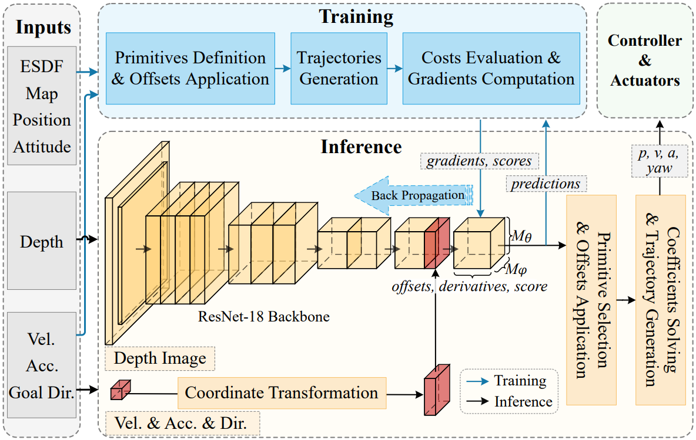

<h1>{{ page.title }}</h1>

<center>

 <div align="center"></div>

<h3>You Only Plan Once: A Learning-based One-stage Planner with Guidance Learning</h3>

<p>In this work, we propose a learning-based onestage planner for trajectory 
generation of quadrotor in obstaclecluttered environment without relying on explicit 
map. Weintegrate perception and mapping, front-end path searching,
and back-end optimization into a single network. We frame the
motion planning problem as a regression of spatially separated
polynomial trajectories and associated scores. Specifically, our
approach adopts a set of motion primitives to cover the searching
space, and predicts the offsets and scores of primitives for
local optimization in a single forward propagation. A novel
unsupervised learning strategy, termed guidance learning, is
developed to provide numerical gradients as the guidance for
training. We train the network policy with privileged information
about the surroundings while only the noisy depth observations
are available during inference. Finally, a series of experiments are
conducted to demonstrate the effectiveness and time-efficiency
of the proposed method in both simulation and real-world.
For supplementary video see: <a href="https://youtu.be/GoqZM3TxDbM">https://youtu.be/GoqZM3TxDbM</a>
The code will be released at <a href="https://github.com/TJU-AerialRobotics/YOPO">.https://github.com/TJU-AerialRobotics/YOPO.</a></p>


</center>

<a href="../projects/onlyplanonce/youonlyplanonce.pdf">READ MORE...</a>
